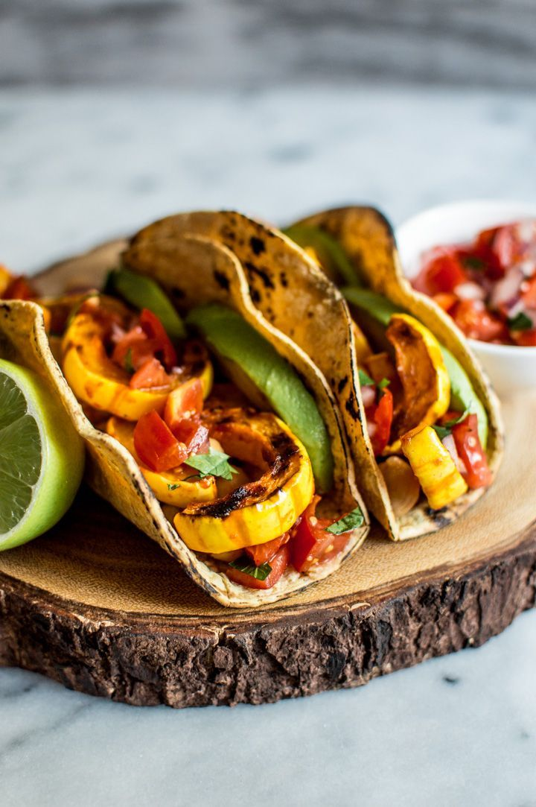

Delicata Squash Tacos

Delicious Delicata Squash Tacos
These delicious delicata squash tacos are perfect for family dinners and everyone can eat them because they are vegan.
Ingredients
- 1 lb. delicata squash, halved and seeded
- 1 medium onion, cut into thin wedges
- 3 tablespoons lime juice
- ½ teaspoon chili powder
- Sea salt and freshly ground black pepper
- 1 cup frozen roasted corn, thawed
- 1 medium avocado, halved, seeded, peeled, and sliced
Steps
- Preheat oven to 425°F. Line a 15×10-inch baking pan with foil. Cut squash into ½-inch-thick slices, then cut slices into thirds. Place squash and onion in a bowl. Add 2 Tbsp. of the lime juice, the chili powder, and salt and black pepper; toss to coat. Spread in prepared pan. Roast about 25 minutes or until squash is tender and golden, stirring once.
- Meanwhile, for salsa, in a bowl combine beans, corn, tomato, scallions, jalapeño, and the remaining 1 Tbsp. lime juice.
- Fill tortillas with roasted squash mixture, salsa, sliced avocado, and fresh cilantro. Serve with lime wedges.